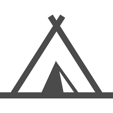
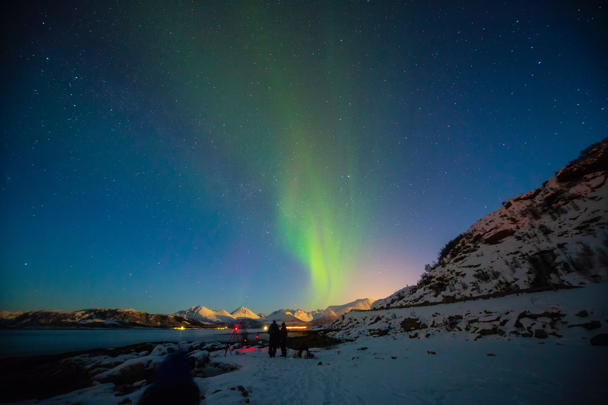

キャンプ場
Search
登録キャンプ場 214件
新規登録
ログイン
地図から探す
北海道
北陸・甲信越
中国
東北
関東
東海
近畿
四国
九州・沖縄
日付から探す
----
年
--
月
--
日
検索
フリーワードから探す
注目のキャンプ場
全国
北海道
東北
北陸・甲信越
関東
東海
近畿
四国
中国
九州・沖縄
コテージ東京
東京都にあるコテージ型のキャンプ場
★★★☆☆
ABC-キャンプ場
清潔なキャンプ場！夏は綺麗な川で泳げます！
★★★★☆
saga-river
佐賀県にあるキャンプ場。川が近くにあるため、魚釣りや川遊びを楽しむことができます。
★★★☆☆

久留米グランピング
福岡県にあるグランピング施設。綺麗な星空の下で非日常な空間を！
★★★★★
注目のキャンプ場をもっと見る ▶︎